Nothing in the guide matches that. Try fewer or other words, such as “proxy”, “ripple” or “loudness”.
Kiria User Guide
Kiria is a fast video editor made for game recordings, facecams and voice-overs. This guide walks through every page, tool and setting, with the keys for each.
Use the search box at the top (press / or Ctrl+K) to find anything, or pick a chapter on the left. Every heading has its own link: point at it and click the # beside it to copy where it is.
The keys in this guide are the usual ones. You can change any of them on the keyboard shortcuts page; menus and tooltips in the app always show the keys you use now. On keyboards other than US English, a few keys print a different character in the app (Kiria writes them the way your keyboard prints them), but they sit in the same place.
The Color page and effects are still being built, so they are not in this guide yet.
The short version#
- Start Kiria. The launcher opens: click New project, give it a name and click Create.
- Press Ctrl+I (or drop files on the window) to bring in your recordings. On the Edit page each one goes at the end of the timeline.
- Press Space to play. Press S to split at the red edit needle, Backspace to delete a clip and close the gap.
- On the Audio page, set each track's role and level; on the Export page, pick Web, 1080p and click Export.
Everything is saved as you go. You never lose work to a crash: see Saving and recovery.
Getting started#
Kiria comes as two programs: the launcher, which finds and opens projects and keeps the app up to date, and the editor, where you work on one project. The Start menu and desktop shortcuts always open the launcher.
Installing#
Windows: run the installer (Kiria-Setup-version.exe). It installs for you alone, so it needs no administrator rights, and it can add a desktop shortcut. The installer isn't signed with a paid certificate, so Windows may show a blue “Windows protected your PC” window the first time: click More info, then Run anyway.
Linux: download the .AppImage file, allow it to run (in its file properties, or with chmod +x) and start it. It brings everything it needs, FFmpeg included.
Uninstalling (Windows: Settings › Apps) removes the programs. Your projects, recordings and settings stay where they are.
The launcher#
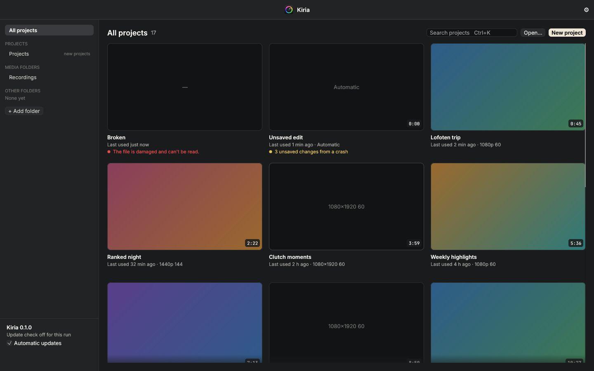
The launcher shows your projects as cards, the most recently used first. Each card has a picture from the project, its length, size, frame rate and when you last used it. A card also says when something needs your attention: unsaved work after a crash, files that can't be found, a project saved by a newer version, or a damaged file.
- Open a project: double-click its card, or click it and press Enter. The editor starts and the launcher closes.
- Find a project: type in the search box above the cards (Ctrl+K puts the keyboard there).
- Open… opens a project file from anywhere on your computer and adds it to the list.
- Right-click a card for Open, Rename…, Move to (another of your folders), Show in file manager, Remove from list (the files stay) and Delete project….
Delete project… first lists every file that would go: the project file and the files that belong to it (its autosave journal, backups, picture, timeline layout and saved versions). Move to recycle bin then moves them to the recycle bin (on Linux, the trash), so you can get them back. Your recordings are never touched. A project that is open in the editor can't be renamed, moved or deleted until you close it.
Making a new project#
- Click New project in the launcher.
- Type a Name.
- Leave Timeline settings on Automatic: the first video you import sets the picture size, frame rate and sound rate, and the editor tells you what it chose. Or start from a template: Game clip (1920×1080, 60 fps), High frame rate (2560×1440, 144 fps) or Vertical short (1080×1920, 60 fps).
- Under Save in, pick one of your project folders, or Browse… for any folder. Tick Save new projects here from now on to make it the usual place.
- Click Create. The editor opens on the new project.
If you import several files at once into an Automatic project, the timeline takes the size and frame rate most of the videos share. You can change a timeline's settings at any time: Timeline settings.
Folders#
The left side of the launcher lists All projects and three groups of folders. Click a folder to see only the projects in it.
- Projects: folders where you keep projects. Projects saved in them show up by themselves. On the first start Kiria makes a
Kiria projectsfolder in your Documents. - Media folders: where your recording software saves. The editor watches them while a project is open and lists new recordings under New in your folders, ready to add with one click.
- Other folders: anything else you want at hand. Kiria also looks in all of these when files of a project have moved (relinking).
Click + Add folder and choose the group. Right-click a folder for Save new projects here, Show in file manager and Remove from list (the folder and its files stay where they are).
Updates and betas#
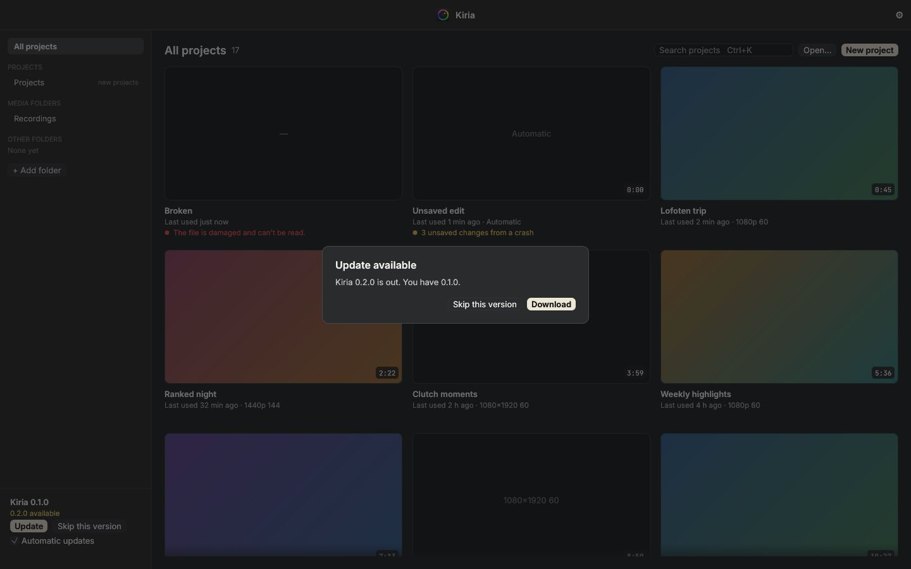
The launcher checks for new versions when it starts (it never waits for the network: being offline doesn't slow it down). The version panel at the bottom left says which version you have and whether a newer one is out.
- When Update available appears, click Download (or Skip this version to never be offered that one). Hide lets the download carry on in the background.
- When it says Update ready, click Restart now, or Later: it installs the next time you start Kiria.
In the launcher's Settings (the cog), the Updates tab has:
- Versions to get: Stable releases, or Betas too. Betas are test versions, published every time something new is finished; they may have rough edges.
- Automatic updates: download new versions as soon as they are out.
Updates are safe to take. Every download is checked against a signature before anything is installed, and a new version is installed beside the old one. If a new version fails to start twice in a row, the launcher goes back to the previous version by itself, never offers the failed one again, and tells you what happened, with Report the problem and Show crash reports.
The editor at a glance#
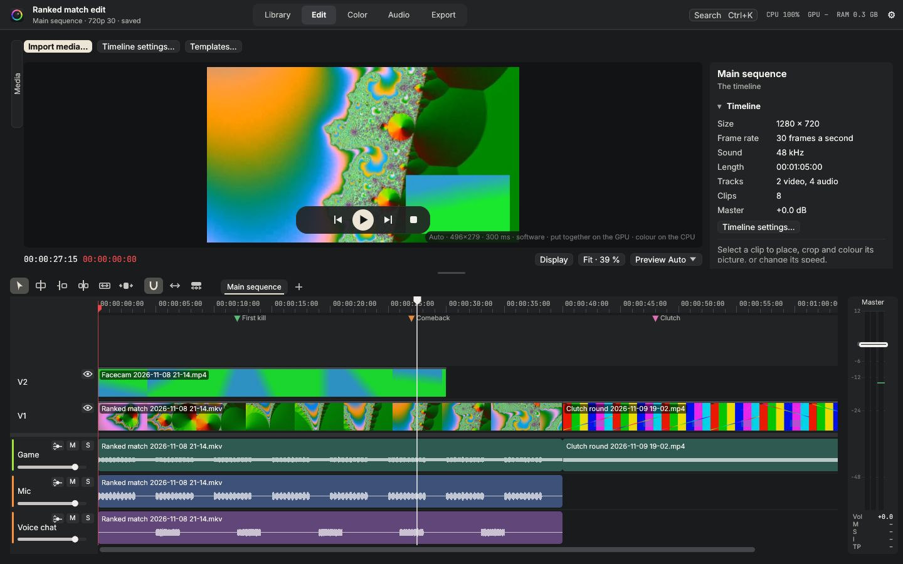
The top bar and pages#
The top bar is the same on every page:
- Left: the project's name, and under it the open timeline, its size and rate, and whether it is saved (“saving soon”, “saving…”, “saved”).
- Middle: the pages: Library, Edit, Color, Audio and Export. They switch at once and share the playhead, the edit needle, the region and the timeline labels, so moving between them feels like moving around one workspace.
- Right: Search (Ctrl+K), what the computer is using (processor, graphics card and memory; click it to open Settings at Resources) and the cog for Settings (Ctrl+,).
The line along the bottom of the window is the status line. It says what just happened (“Undone: removed 2 clips”, “Saved.”) and fades after a few seconds. Problems show as a strip with what happened, why, and a fix, often with a button that does the fix for you.
Search: find anything with Ctrl+K#
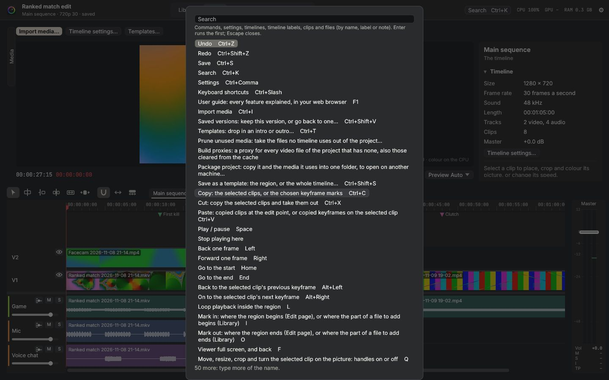
Press Ctrl+K (or click Search in the top bar) and start typing. Search finds:
- Commands, with their keys: type “ripple”, “split”, “proxy” or “help”. It knows the names other editing tools use too, so “razor” finds Split and “compound clip” finds Nest.
- Settings: “proxy” opens Settings scrolled to the Proxies row.
- Timeline labels and clips (jump there), the project's files (by name, label or note; opens the media drawer on them) and other timelines.
- The keyboard shortcuts page and this user guide.
Enter runs the first result, or click any result. Esc or a click outside closes it.
Opening this guide#
Press F1 in the editor or the launcher, search for “help” or “guide” with Ctrl+K, or open Settings › Help › User guide and click Open. The guide opens in your web browser and works without an internet connection.
Undo and redo#
Every change to a project can be undone: Ctrl+Z undoes, Ctrl+Shift+Z or Ctrl+Y redoes. The status line says what was undone, and if the change was on another timeline, that timeline opens. A slider dragged from one end to the other is one step, not hundreds. How you look at things (track heights, zoom, which timeline is open) is not an edit and makes no undo step.
Library page#
The Library page is where you sort your recordings: label them, put them in lists, write notes, listen and watch, mark the part you want and add it to the timeline.
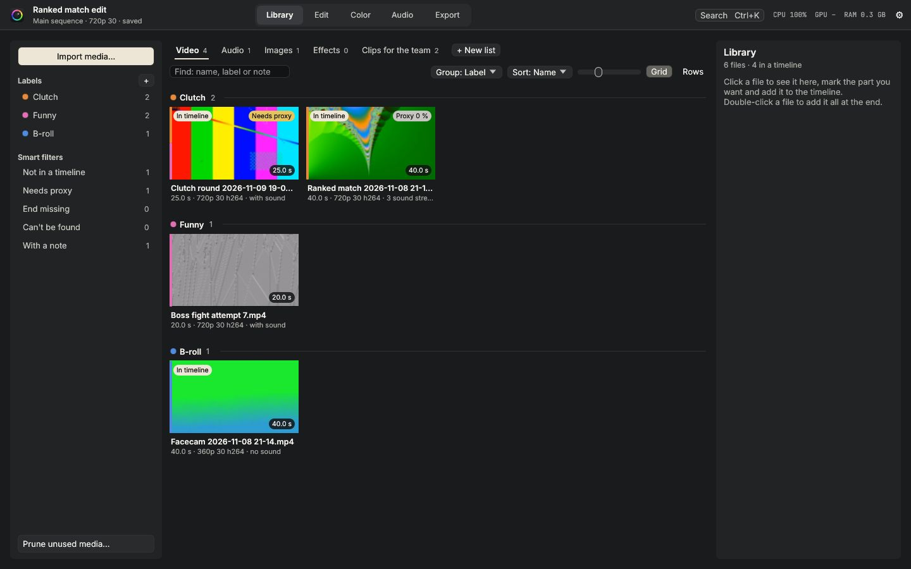
Bringing files in#
Click Import media… at the top left, press Ctrl+I, or drop files on the page. On the Library page files go into the project only, not onto the timeline (importing on the Edit page also puts each file at the end of the timeline).
Every file is checked first. A file Kiria can't use is not added, and you are told why in plain words: an unknown or too new format, no way to decode it, or a damaged file. If a recording's end is missing (the recording software stopped before finishing it), you choose: Import what's there (it is marked “End missing”) or Skip. When you import many files at once, they are summed up in one message.
A recording with several sound streams (game, microphone, voice chat) brings each stream in as its own track, named after the stream when the file names it.
Tabs, grid and rows#
- The tabs across the top are Video, Audio, Images and Effects, then your own lists and + New list. Each tab says how many files it has.
- Under them: Find (words in a file's name, labels or note), the filters that are on (as chips you can remove), Group (by label, by folder, or not at all), Sort, the thumbnail size slider and Grid or Rows.
- Video and pictures show as thumbnails with badges: In timeline, and Needs proxy or how far a proxy is. Move the pointer across a thumbnail to skim through the video.
- The Audio tab shows sound files as rows with a play button, the waveform in the label's colour, the format and the length.
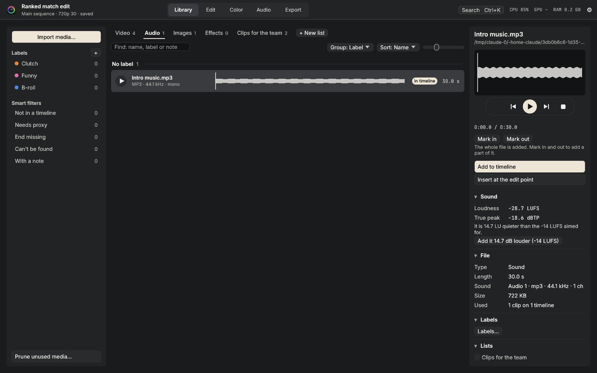
Labels#
Labels are coloured tags for files, such as “Funny”, “Clutch” or “B-roll”. Files are grouped by their first label, with the label's colour along the edge.
- Right-click a file (or several) and open Labels. Tick a label, or choose New label… and type its name.
- Or click + beside Labels in the sidebar to make one.
In the sidebar each label says how many files of the open tab have it. Click a label to show only those files; click more labels to narrow it further (files with all of them); click again to show everything. Right-click a label to rename it, change its colour, remove it, or offer it in every project.
Labels in every project: a label offered “everywhere” shows dimmed in the sidebar of every project. Giving it to a file copies it into that project, so the project never depends on your other projects.
Lists and notes#
- Lists are your own tabs, such as “Clips for the team” or “Best of the week”. Click + New list, or right-click a file › Lists › New list…. A file can be in many lists; a list keeps the order files were put in. Right-click a list's tab to rename or remove it (the files stay in the project).
- Notes: right-click a file › Note, or type in the note box of the panel on the right. Search finds files by their notes too.
Labels, lists and notes belong to the project and every change can be undone.
Smart filters#
Under the labels, smart filters show the files that need you: Not in a timeline, Needs proxy, End missing, Can't be found and With a note. Each says how many files it has; click it to see them.
Choosing several files#
Ctrl-click adds or removes one file, Shift-click takes everything in between, and Ctrl+A chooses every file shown. Then right-click to label them, put them in a list, build their proxies, add them to the timeline one after another, or take them out of the project. Each of these is one undo step.
Watching, marking and adding a file#
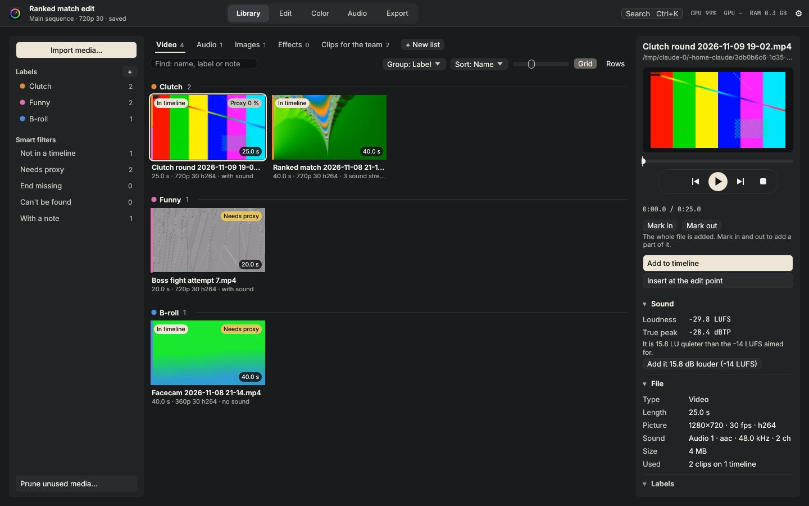
Click a file to show it in the panel on the right, with a small player of its own. While the pointer is over the Library, Space, ←, →, Home and End work this player rather than the timeline.
- Play or scrub to where the part you want begins and press I (or click Mark in).
- Go to where it ends and press O (or Mark out).
- Click Add to timeline, or double-click the file. The marked part goes at the end of the open timeline, as one undo step, with its sound on the tracks the whole file would take. Insert at the edit point puts it at the red edit needle instead, moving what comes after along.
The panel also shows what the file is (format, size, frame rate, sound streams), its labels, lists and note.
Marks are kept for the session. To keep them in the project (so they come back next time), set Settings › Library › Keep in and out marks to save them in the project. The file itself is never changed.
Loudness and levels#
For each sound stream of the file picked, the panel measures its loudness (in LUFS) and its true peak. A button beside each stream offers the level to add it at, so it lands near the loudness you aim for (Settings › Audio) without its peaks going over −1 dBTP. Clicking it changes only how loud the stream goes onto the timeline; the file stays as it is.
New in your folders#
While a project is open, the editor watches your media folders. A new recording shows under New in your folders (in the Library's sidebar and in the Edit page's media drawer) once it has finished being written. Click Add for one, Add all for every one, or × to hide one for this session. Nothing is added by itself.
Prune unused media#
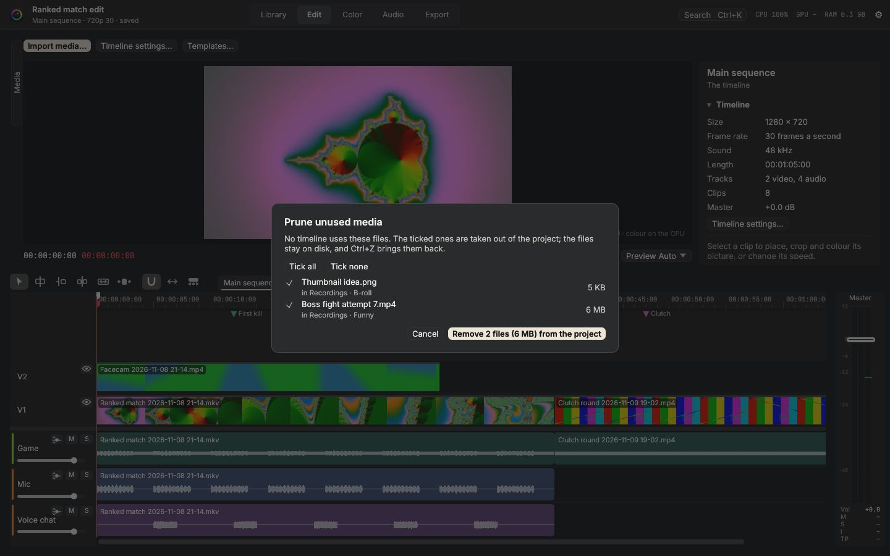
Click Prune unused media… at the bottom of the Library's sidebar (also in the media drawer's ⋯ menu and in search). It lists every file that no timeline uses, each ticked, with its size, folder, labels and note. Untick the ones to keep (or use Tick all and Tick none) and click Remove N files. This is one undo step, and your files on disk are never deleted.
Package a project#
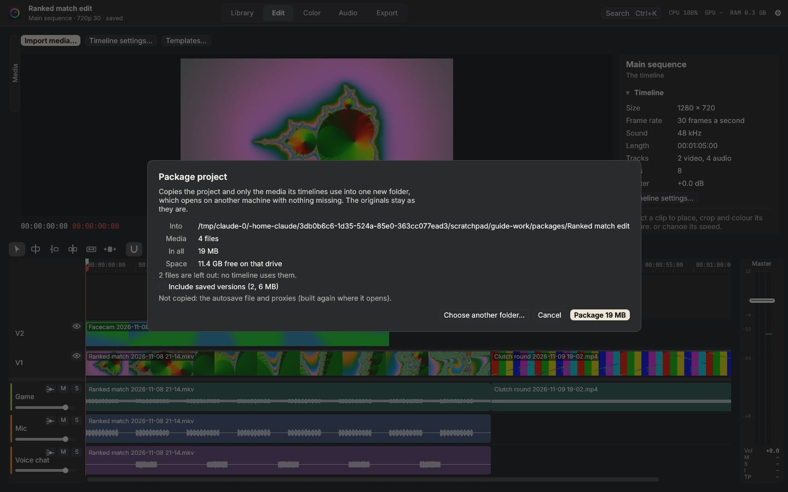
To move a project to another computer or send it to a friend, package it: the project and only the media its timelines use, in one folder that opens wherever it is moved.
- Search for “package” (Ctrl+K), or open the media drawer's ⋯ menu › Package project….
- Pick a folder. A new folder named after the project will be made in it.
- Check what goes in: the number of files, the size in all and the free space on that drive. Tick Include saved versions if you want them too.
- Click Package (the button says the size). Copying runs in the background with progress and the time left; Cancel leaves nothing behind.
The package has a clean save of the project and a Media folder. It doesn't include the autosave journal, backups, templates or proxies.
Missing files and relinking#
If you move or rename recordings, a project can't find them. When it opens, Kiria looks for them by itself, by their contents rather than their names, in the project's folder and in your launcher folders. What it finds is relinked as one undo step, and the status line names the files.
Files still missing are marked on the timeline and listed in a banner on the Edit page. Click Find them… and pick a folder: Kiria looks through it and relinks every file it recognises, even renamed ones. The launcher's cards also say how many files a project is missing.
Edit page#
The Edit page is where you cut: the viewer at the top, the inspector on the right for the selected clip, and the timeline across the whole width at the bottom.
Finding your way around#
- Above the viewer: Import media…, Timeline settings… and Templates….
- The Media tab on the left edge opens the media drawer.
- The viewer shows the timeline's picture at the playhead, with the transport floating over it. Under it: the playhead's timecode (white) and the edit needle's (red), the Display menu, the zoom menu and Preview quality.
- The inspector on the right shows the selected clip's settings, or the timeline's details when nothing is selected.
- The handle between the viewer and the timeline shares the height between them: drag it, or double-click it for the usual split.
- The timeline: the tools on the left of its top row, the timeline tabs beside them, the ruler, the labels row, the video tracks above the audio tracks, and the master column on the right.
Importing on the Edit page#
Press Ctrl+I, click Import media…, or drop files on the window. Each file is checked (see Bringing files in), added to the project and placed at the end of the open timeline. A recording with several sound streams gets one audio track per stream, named after the stream (“Game”, “Mic”, “Voice chat”) when the file names them; other tracks are named V1, V2, A1, A2 and so on.
While a file's waveform and clip pictures are being read, its clips say so with a small progress bar, and the track's name says “Reading 43 %”. You can keep working meanwhile. Waveforms are kept by recording, so a file you have used before shows its waveform at once.
Playing and moving the playhead#
| To | Do this |
|---|---|
| Play or pause | Space, or the round button in the transport. Pausing goes back to where playback started, so you can watch a moment again and again. |
| Stop where you are | Ctrl+Space, or the square button in the transport. The playhead stays where playback stopped. |
| Step one frame | ← and →, or the buttons beside play |
| Go to the start or end | Home and End, or the buttons beside the frame steps |
| Jump to a moment | Click or drag in the ruler, or in the scrub bar under the picture. Alt+click anywhere on the timeline moves the playhead there with any tool. |
| Loop | L, or the round-arrows button at the right end of the transport (lit while on), plays the region over and over |
The transport, from left to right: Mark in, Mark out, Go to the start, Back one frame, Play / pause (in the middle), Forward one frame, Go to the end, Stop, Loop. Point at a button to see its keys. It is the same on every page; in the Library's player the loop button is greyed.
Preview quality (under the picture): Auto lowers the picture's size while playing when frames would come late, and the viewer's corner says so; Full, 1/2 and 1/4 fix it. Export always uses full quality.
Zoom into the picture: Ctrl+wheel over the picture zooms at the pointer, and dragging with the middle button moves around. The zoom menu beside the preview quality says the scale (“Fit · 47 %”) and offers Fit (Shift+Z), 50 %, 100 % (Ctrl+0), 200 %, zoom in (Ctrl+=) and out (Ctrl+-).
The playhead and the red edit needle#
The timeline has two markers. The white playhead is what you see and hear. The red edit needle is where edits happen: splits, pastes, labels and media dropped “at the edit point”. Keeping them apart lets you watch ahead without losing your place. Drag the needle by its red handle in the ruler; its timecode is shown in red beside the playhead's.
- Edit at the playhead (Display menu, or Settings › Editing) merges the two: edits happen at the playhead and there is no separate needle.
- Clicking the timeline moves the playhead (the usual) or the edit needle. Set to the needle, a click in the ruler puts the needle there, and the playhead is moved by dragging its handle at the top of the ruler.
Zooming, scrolling and track heights#
- Zoom: Ctrl+wheel or a pinch zooms at the pointer; = and - zoom around the playhead; \ shows the whole timeline (also the ↔ button). Zoomed all the way in, every frame is wide enough to grab.
- Pan: Shift+wheel, a sideways wheel, two fingers on a touchpad, or drag with the middle button. The plain wheel scrolls the tracks under the pointer.
- Track heights: drag the edge of a track's name (double-click it for the usual height). Alt+wheel, or Alt+= and Alt+-, make every track of the area under the pointer taller or shorter; Alt+\ puts them all back.
- Video and audio: each area scrolls on its own. Drag the line between them to share the height.
Heights and the divider's place are kept with the project (in a small .view file beside it), not as edits, so they never fill your undo history.
Tracks#
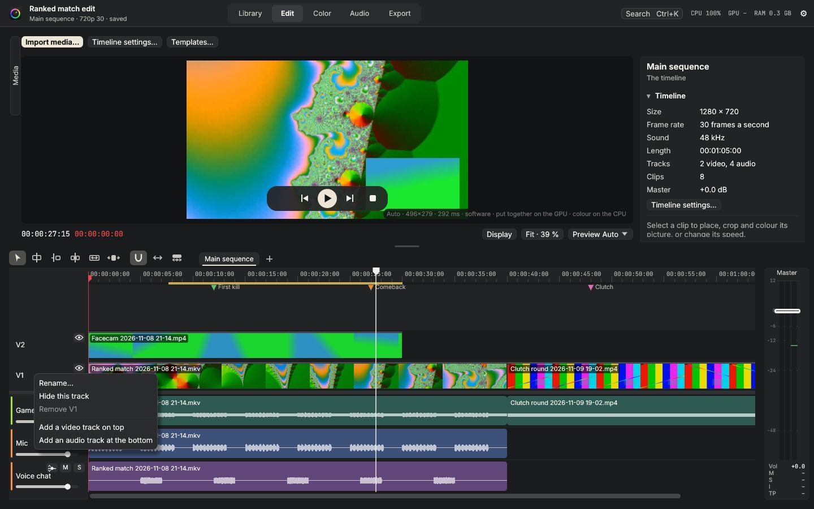
- Add a track: right-click the column of track names › add a video track (it goes on top: V2 covers V1) or an audio track (at the bottom).
- Rename: double-click a track's name and type.
- Hide a video track: click its eye. Its clips are dimmed and left out of the picture.
- Remove a track: right-click it › Remove. Only an empty track can be removed, so removing a track never removes clips, and the last track of each kind stays.
- Audio tracks have M (mute), S (solo), a volume fader (double-click for 0 dB) and a level button that draws a line across each clip at its volume: drag a clip's line up or down to change that clip's volume.
Clips: selecting, moving, placing#
- Select: click a clip. Shift-click or Ctrl-click adds more; Ctrl+A selects every clip of the open timeline; Esc selects nothing. A clip's linked sound is selected with its picture.
- Move: drag it along its track. Dragging one of several selected clips moves them all.
- Another track: drag it up or down; its sound moves with it and finds a free audio track if it needs one. Drag it past the top video track (or under the bottom audio track) and a lit “New track” strip shows where a new track will be made for it.
- A move that isn't allowed (it would land on another clip) is drawn in the warning colour before you let go, and nothing changes.
From the media drawer: drag a file onto a track. Its picture goes on the video track under the pointer and replaces what it covers there; its sound takes audio tracks with room, so nothing else is cut. Hold Ctrl while dropping to insert instead: everything after it moves later on every track. Dragging a timeline tab onto the timeline places that timeline as one clip.
Tools#
The tool buttons sit at the left of the timeline's top row. A tool works the same in every view of the timeline.
| Tool | Key | What a drag or click does |
|---|---|---|
| Select | V | Pick clips, move them, and trim an edge by dragging it (a trim leaves a gap or uses one). |
| Blade | B | Cut a clip where you click. |
| Ripple | R | Trim an edge and move everything after it along, on every track, so no gap opens and nothing overlaps. |
| Roll | T | Move the cut between two clips: one gets longer as the other gets shorter. Nothing else moves. |
| Slip | Y | Show another part of the clip's file without moving the clip. The viewer shows the clip's first frame and its pictures, waveform and keyframes slide as you drag; it stops at the ends of the file. |
| Slide | U | Move a clip between its neighbours: the clip before gets longer or shorter to make room, and the one after the other way. |
| Snapping | N | On or off. Edges snap to the start, the playhead, the edit needle, timeline labels and other clips' edges. Holding Alt while dragging skips snapping once. |
| Lines | A | Draw volume and pan lines instead of working clips. While it is on, “Lines on ×” shows in the tool row; Esc leaves it. |
The two buttons after snapping show the whole timeline (\) and switch the rough cut view (Ctrl+Shift+T).
Split, delete and gaps#
- Split (S) cuts the selected clip, with its linked sound, at the edit needle; with nothing selected it cuts every track there. If nothing is under the needle, the message offers Split at the playhead instead. A clip's right-click menu also has Split this clip here and Split every track here.
- Delete (Delete) removes the selected clips and leaves a gap.
- Delete and close the gap (Backspace, also called a ripple delete) removes them and moves everything after back on every track, so sound stays in sync. If a clip on another track is in the way, nothing is cut and the message says why.
- Close a gap: click the empty space between two clips to select the gap, then press Delete or Backspace, or right-click › Close the gap.
The region: marking a stretch#
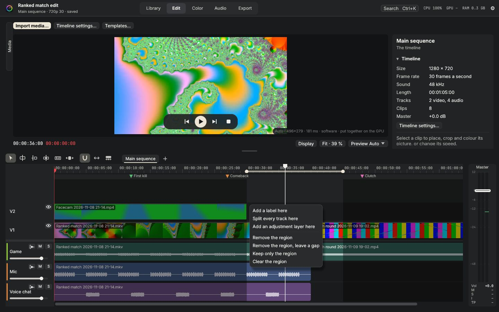
The region marks a stretch of the timeline: to loop, to export, to save as a template, to learn noise from, or to cut.
- Mark it: Shift-drag in the ruler. Or press I where it should start and O where it should end (at the playhead). Right-click a clip › Set the region to this clip.
- Change it: drag its round handles.
- Loop it: L.
- Cut with it (right-click the region, in the ruler or on the tracks): Remove the region cuts it out of every track and closes the gap; Remove the region, leave a gap cuts it out and leaves the space; Keep only the region removes everything before and after it. Each is one undo step.
- Clear it: right-click › Clear the region.
Copy, cut and paste#
- Ctrl+C copies the selected clips with their linked clips. (If keyframe marks are chosen on the selected clip, it copies those instead: see Keyframes.)
- Ctrl+X copies them and takes them out, leaving the gap. Turn on Settings › Editing › Cut closes the gap to close it instead.
- Ctrl+V pastes at the edit needle, on tracks of the same kind and number (missing ones are made), replacing what the clips land on. Nothing else moves. You can paste into another timeline too.
Timeline labels (markers)#
Press M to put a label at the edit needle, or right-click the timeline › Add a label here. Labels sit in the Labels row under the ruler. Click one to go there; double-click it to rename it, change its colour or remove it. Search (Ctrl+K) finds labels by name.
Several timelines and nested timelines#
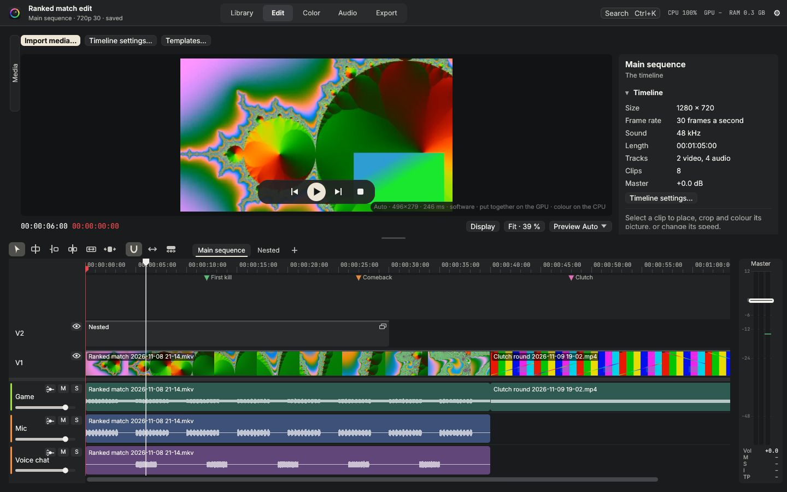
A project can have as many timelines as you like, for example a long cut, a short and a highlight reel. Each has a tab above the timeline, beside the tools.
- Open one: click its tab. Which one is open is not an edit and isn't undone.
- New: click + (the same size and rate as the open one). Its name is ready to type.
- Rename: double-click its tab.
- Right-click a tab to Duplicate it, open its Settings…, place it in the open timeline, or Remove it. The last timeline, and one that another timeline plays, can't be removed; the menu says why.
Nested timelines: select some clips and choose Nest the selected clips (right-click on the timeline): they move into a new timeline of their own and one clip playing that timeline takes their place. You can also drag a tab onto the timeline. A nested clip works like any clip: trim it, move it, change its speed, place and colour it. Double-click it (or right-click › Open its timeline) to edit what's inside; changes show everywhere it is used.
A nested clip never changes length by itself. If its timeline gets shorter, the part past the end is hatched on the clip; right-click › Fit to the nested timeline trims it. A timeline can never end up inside itself: that is refused with the reason.
Adjustment layers#
An adjustment layer is a clip with no picture of its own: its colour settings change everything below it on the timeline while it lasts. Right-click a video track › Add an adjustment layer here, or use the command from search (it is added at the playhead). It is five seconds long and goes on the first free video track from there up, or on a new track on top. Trim, move and split it like any clip. Its settings are in the inspector: Opacity and Quick color, with keyframes. Colour grading tools come with the Color page.
Templates: intros and outros#
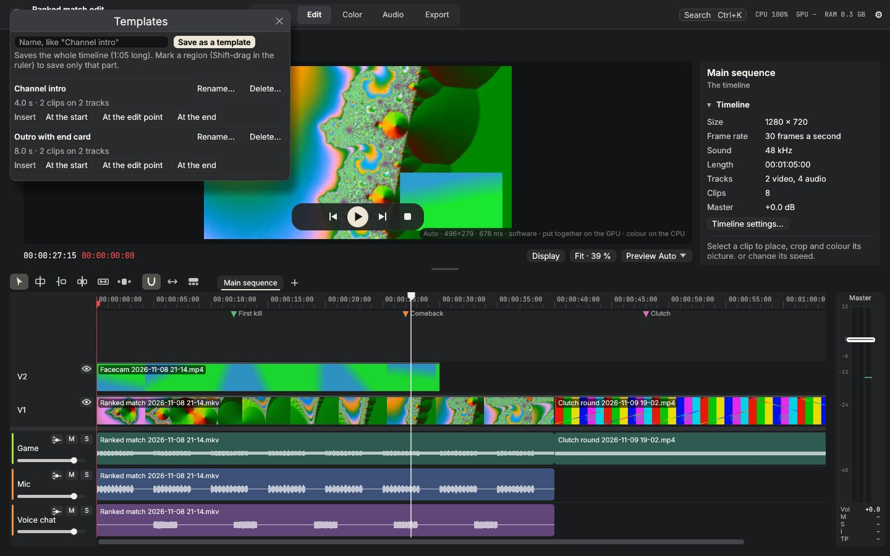
- Mark the intro with the region (or leave it unmarked to use the whole timeline).
- Press Ctrl+Shift+S (Save as a template) and give it a name.
- In any project, press Ctrl+T (or click Templates…), pick the template and drop it in At the start (as an intro: everything moves later to make room), At the edit point or At the end (as an outro).
Dropping one in is one undo step. It makes any tracks it needs and reuses media the project already has. Templates belong to you, not to a project: they are kept in the app's data folder and offered in every project. Rename and delete them in the same window; projects they were dropped into don't change.
The inspector#
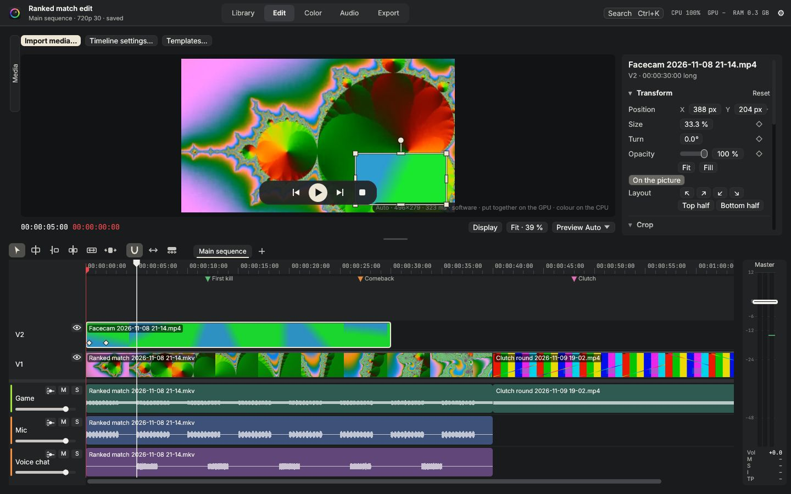
Select a clip and the inspector shows its settings in sections. Each section's header says in one line what is set and has a Reset; click the header to fold it away. Drag a number to change it (you see the change in the viewer at once) or type one. Letting go is one undo step.
- Transform: position (in pixels of the frame), size (in percent of fitted), turn and opacity; Fit and Fill; and one-click layouts for a facecam: small in any corner, or filling the top or bottom half of the frame (for a vertical video with the game above and your face below).
- Crop: each side.
- Quick color: exposure, contrast, saturation, temperature and tint.
- Speed: see Speed and slow motion.
- Audio: volume (−60 dB is silent, up to +12 dB), pan (equal power) and fades in and out, on whole frames. A selected picture's Audio sets all the sound linked to it (game and mic together). Fades are drawn on the clip in the timeline.
With several clips selected, the inspector shows the one on the highest track and says so. With nothing selected it shows the timeline's details, with Timeline settings….
Moving and cropping on the picture#
Press Q (or tick On the picture in Transform) to put handles on the selected clip's picture in the viewer:
- Drag inside to move it. It snaps its centre to the frame's centre lines and its sides to the frame's edges.
- Drag a corner to resize it; the opposite corner stays put.
- Drag the bar on a side to crop that side. The whole picture shows faintly while you drag.
- Drag the round handle above it to turn it. It lands on upright and quarter turns when near; Shift turns in steps of 15°.
- Double-click it to fit it.
Hold Alt (or switch snapping off) to place freely. The inspector's numbers follow as you drag.
Keyframes: changes over time#
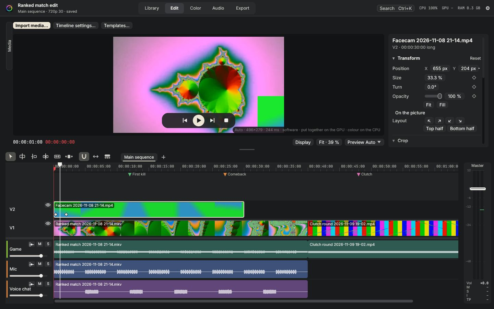
Every number in Transform, Crop and Quick color can change over time. The diamond at the end of a number's row tells you how it is: hollow when the number doesn't change over time, filled when there is a keyframe at the playhead, and hollow with a dot between keyframes.
- Move the playhead to where the change should start and click the diamond: the first keyframe.
- Move the playhead on and change the number: a second keyframe is made there by itself.
- Play: the value goes from one to the other.
- Click a filled diamond to remove that keyframe. Right-click it to choose how the value goes on to the next: linear, hold or smooth. The arrows beside it go to the previous and next keyframe.
- The selected clip shows its keyframes as small diamonds along its bottom edge. Click one to go there; Alt+← and Alt+→ step between them. Drag one to move it a frame at a time.
- Choose several with Shift or Ctrl-click, or drag a box along the clip's bottom edge. Right-click for Go here, Remove these keyframes or how they go on.
- Copy and paste keyframes: choose marks, press Ctrl+C, select a clip (the same or another, in any timeline), put the playhead where they should start and press Ctrl+V.
- A section's Reset also removes its keyframes.
Keyframes stay on the same moment of the recording when you move, trim or speed up the clip.
Speed, slow motion and speed ramps#
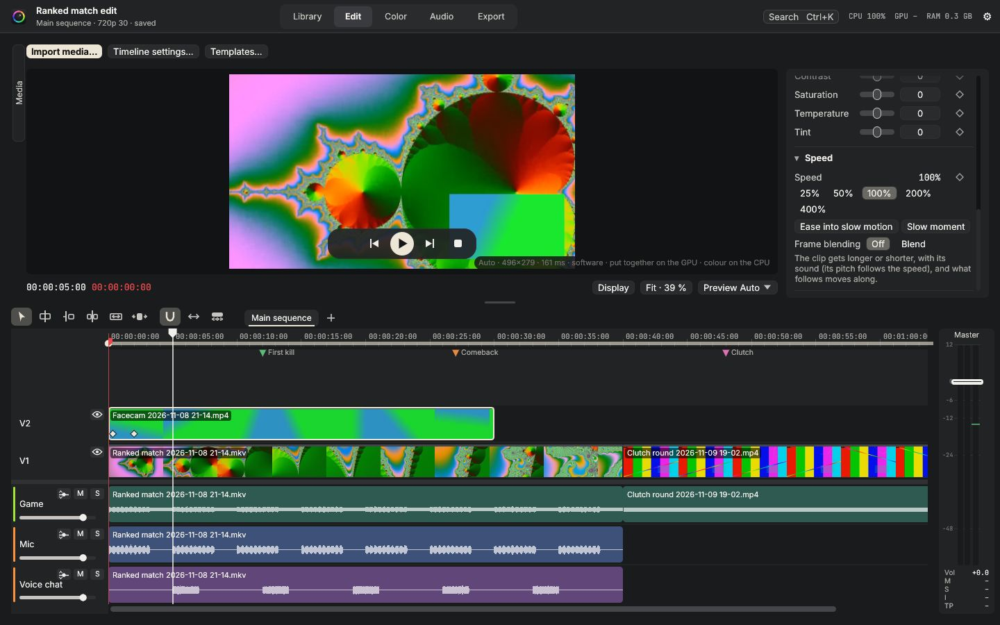
- One speed: the buttons set the whole clip from 25 % to 400 % (also in the clip's right-click menu › Speed). Picture and sound follow; the sound's pitch follows the speed.
- Clean slow motion: for a recording with more frames per second than the timeline (120 or 144 fps on a 60 fps timeline), an extra button offers the speed that shows every recorded frame once (50 % for 120 fps, 42 % for 144 fps). It is perfectly smooth.
- Speed ramps: put the playhead where the slow motion should start and click Ease into slow motion (smoothly down over half a second and staying slow) or Slow moment (down, a second slow, and back up). Or click the Speed row's diamond to add speed keyframes yourself, as with any number. Remove ramp goes back to one speed.
- Frame blending: Blend mixes neighbouring recorded frames for slowed clips whose frames would otherwise repeat; Off shows each frame as it was recorded.
A ramped clip shows its speed as a thin line along it and “Ramp 100→25→100%” beside its name. The clip keeps the part of the recording it plays, so its length changes and what comes after moves along.
The media drawer#
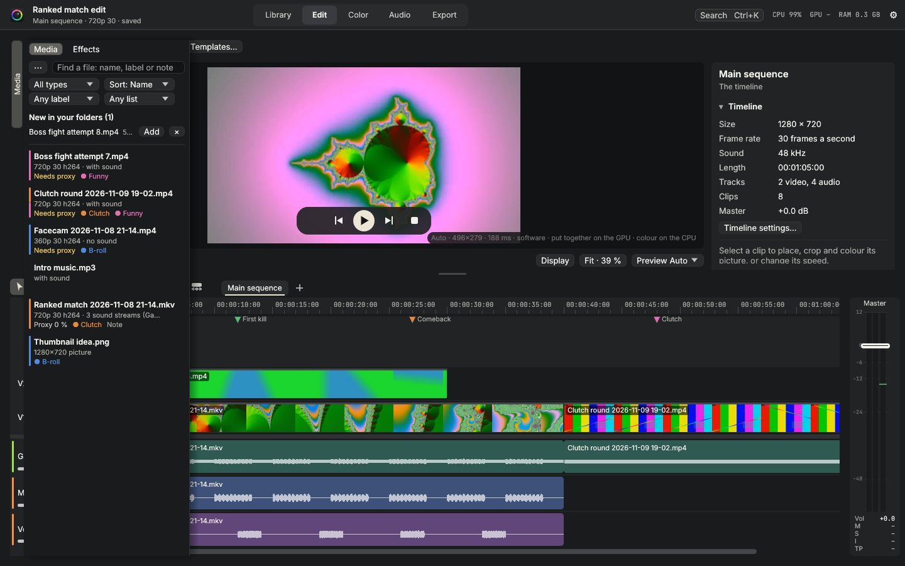
Click the Media tab on the left edge. The drawer floats over the page; a click elsewhere closes it, and it steps aside while you drag a file over the timeline.
- Find a file matches words in names, labels and notes. Under it, narrow by type, order, label and list.
- Double-click a file, or click +, to place it at the end of the timeline. Drag it onto the timeline to lay it on a track (Ctrl inserts).
- Right-click a file for Insert or Overwrite at the edit point, its labels, lists and note, and Build proxy now or Delete proxy.
- The ⋯ menu has Prune unused media… and Package project….
Sync by sound#
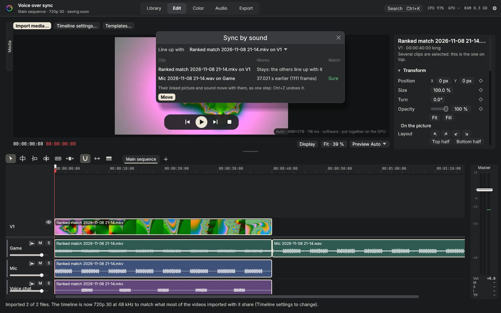
Recorded your mic or a friend's voice separately? Sync by sound lines it up with the game recording by listening to both.
- Put the clips roughly where they belong (within a few minutes) and select them all.
- Right-click one › Sync by sound… (or search for “sync”).
- The window compares each clip with the reference (the clip on the lowest video track; choose another under Line up with) and lists how far each would move, in milliseconds and frames, and how sure it is: Sure, Likely or Unsure — check by ear.
- Click Move to move the sure and likely ones (with their linked clips) as one undo step. Unsure ones only move with Move anyway.
Clips with a picture move by whole frames; sound alone lines up to the sample. If a move would put the start of a clip before the timeline starts, that part is cut off, and the window says so before you move.
Remove silence#
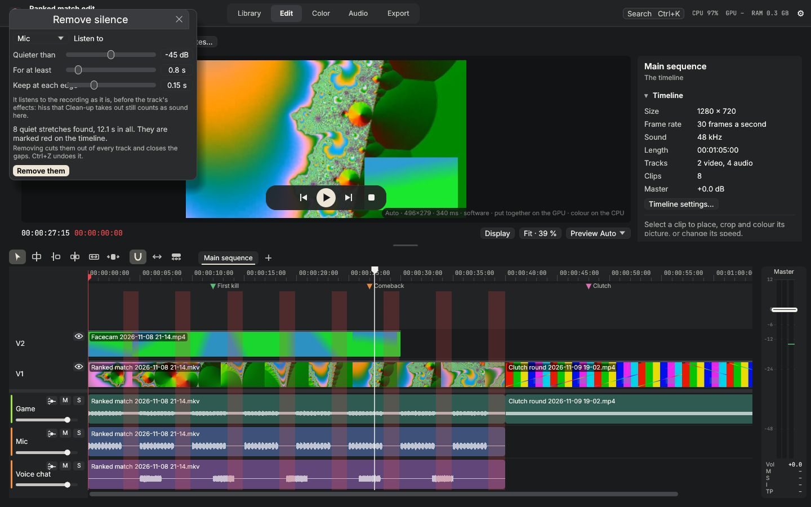
- Press Ctrl+Shift+R.
- Choose the track to Listen to (it starts on the first Dialogue track).
- Set Quieter than (the threshold), For at least (the shortest pause to cut) and Keep at each edge (a little air around the words). The silent stretches are marked red on the timeline as you change them.
- Click Remove them. They are cut out of every track and the gaps closed, as one undo step.
It listens to the recording as it is, before the track's effects, so hiss that Clean-up removes still counts as sound. If the threshold is under the recording's quietest level, it says so and offers a better one (“Use −27 dB”).
Proxies: smooth playback of heavy recordings#
A proxy is a light copy of a recording that is quick to jump around in. Kiria shows the proxy's frame while you scrub or jump, then the exact frame from the original when the playhead rests (the viewer's corner says “proxy frame” meanwhile). Export always uses the originals.
- Settings › Playback & proxies › Proxies: Auto (the usual) builds a proxy only for files that are slow to jump in; On builds one for every video; Off builds none.
- Proxies are built in the background, the newest file first, and wait while the timeline plays. On a processor with many cores a few are built at once, and a long recording is built in several pieces side by side. To build every missing proxy as fast as the machine can, also while you play, search for Build proxies at full speed (the editor may feel slower until they are done). The media drawer and the Library say “Needs proxy”, “Proxy 43 % · 2 min left” or “Proxy”.
- Right-click a file › Build proxy now or Delete proxy. Search for “build proxies” to build every missing one.
- Proxies belong to recordings, not projects: one proxy serves every project that uses the file. They are kept in the app's cache folder within the disk space set in Settings › Cache, the ones used longest ago going first.
To free space, use Settings › Cache: clear this project's proxies or every proxy. Your recordings and project files are never touched. A proxy you cleared on purpose isn't built again by itself, only when you ask.
Save a frame as a picture#
Press Ctrl+Shift+E to save the frame at the playhead as a full-size PNG, for a thumbnail or a post. Choose where to save it; it is written in the background.
Timeline settings#
Click Timeline settings… above the viewer (or right-click a timeline tab › Settings…) to set the open timeline's picture size, frame rate and sound rate. Choose Automatic (set by the first video imported), a template, or the same as one of the project's videos. Clips that don't match are fitted inside the frame, never stretched.
Audio page#
The Audio page is for the mix: give each track a role, clean up a noisy mic, keep the game under your voice, and land on the right loudness for where the video goes.
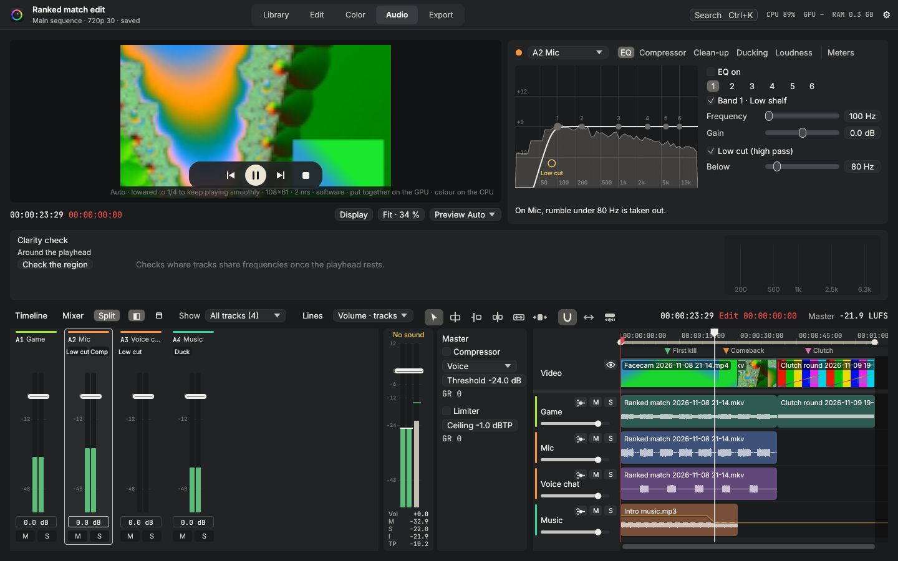
How the page is laid out#
- Top left: the viewer with its transport, the same as on the Edit page.
- Top right: the tools for one track. Pick the track in the dropdown, then a tool: EQ, Compressor, Clean-up, Ducking, Loudness or Meters. Each tool says in one plain sentence what it is doing right now.
- Middle: the clarity check.
- Bottom: Timeline, Mixer or Split (both, side by side or stacked), and a Show filter to see only one role's tracks.
The playhead, edit needle, region, labels, transport and keys are the same as on the Edit page. Every change is one undo step, and you hear a value while you drag it.
Every effect starts off. With everything off, a recording plays exactly as it was recorded.
Track roles#
Right-click a track's name (or its mixer strip) › Role: Dialogue, Music, SFX and foley, Ambience or Other. The role colours the track, filters the views, and tells the tools what is the voice: Ducking listens to Dialogue tracks, and the clarity check protects them. A track made Dialogue also gets a gentle Low cut at 80 Hz, in the same undo step.
EQ and Low cut#
The EQ draws its curve over the track's live sound (play to see it). Six numbered points are its bands.
- Drag a point sideways for its frequency and up or down to raise or lower it.
- Turn the wheel over a point to make it wider or narrower.
- Double-click a point to make it flat again.
- Low cut takes away rumble below a frequency: drag its edge sideways. 80 Hz suits most voices.
The chosen band's numbers are beside the graph to type in.
Compressor#
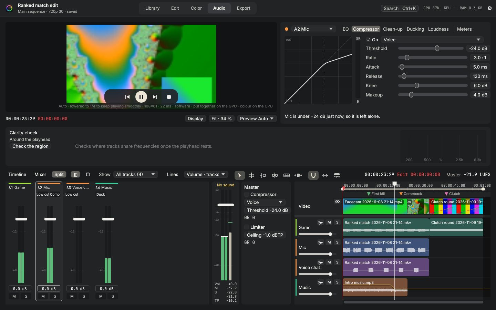
A compressor turns down the loudest moments so a voice stays even. Start from a preset in plain words, then fine-tune Threshold, Ratio, Attack, Release, Knee and Makeup. The curve shows what goes in against what comes out, and the meter how far it is turning down now. Moving any number turns the compressor on.
Clean-up: removing hiss and hum#
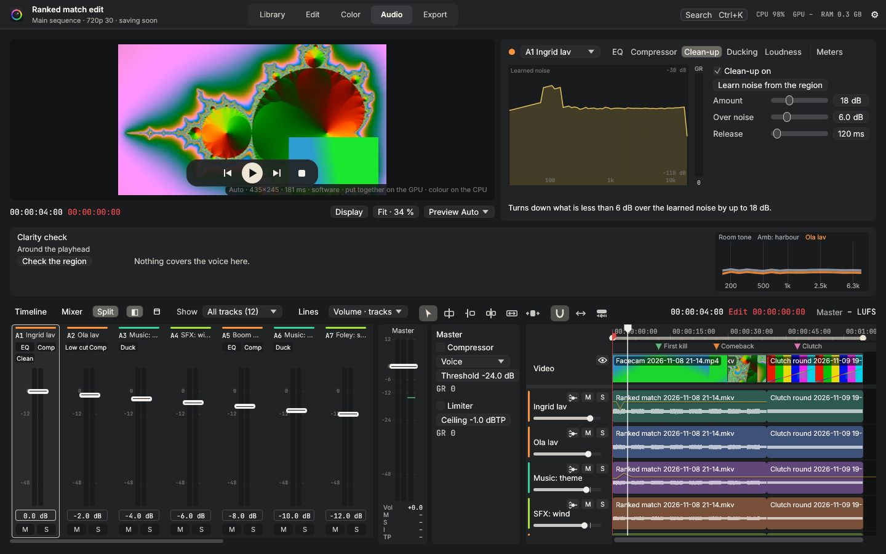
- Find a stretch where only the noise is heard (a pause, before you start talking) and mark it with the region. Or select a clip on this track.
- Click Learn noise from the region (or …from the selected clip). The noise is learned in the background and drawn across the frequencies, and Clean-up turns on.
- Set Amount (how much quieter the noise gets), Over noise (how much louder than the noise a sound must be to pass untouched) and Release. Play and listen.
Ducking: music and game under your voice#
Ducking turns a track down while someone talks on a Dialogue track, and back up in the pauses. Open it on the game or music track and turn on Duck under dialogue. Set Depth (how far down), Speech over (how loud the voice must be to count), and how fast it goes down, holds and comes back up. A meter shows how far down it is now. It needs at least one track with the Dialogue role.
Loudness: keep a track even#
The Loudness tool keeps a track near one loudness, lifting quiet stretches and lowering loud ones, within Lift up to and Lower up to. Useful for a friend on voice chat who is sometimes close to the mic and sometimes far away. It shows how much it is lifting or lowering now.
Meters and the loudness overview#
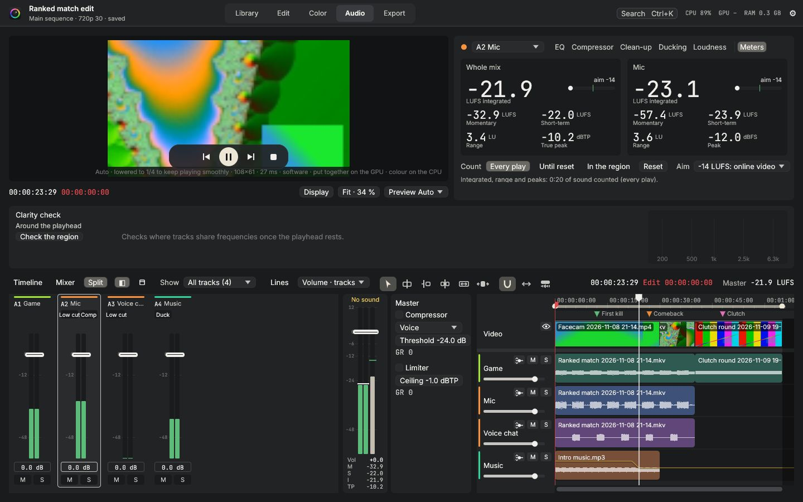
The Meters tab shows, for the whole mix and the chosen track: integrated loudness (large, against the aim), momentary, short-term, loudness range and peak (true peak for the mix). Choose how integrated loudness and peaks are counted:
- Every play: they start again each time you play (as on the Edit page).
- Until reset: they add up over every play until you click Reset.
- In the region: only what plays inside the region counts.
The master column (right of the timeline on the Edit page, and the master strip in the mixer) has the mix's meter, which is also its fader, a loudness lane with a line at the aim, and M, S, I and TP under it: momentary, short-term, integrated loudness and the highest true peak. I turns green within 1 LU of the aim. Click I or TP to start them again.
The loudness to aim for is one setting: right-click the master column, or Settings › Audio. −14 LUFS suits online video; −16, −23 and −24 LUFS (broadcast) or none are offered too.
The mixer#
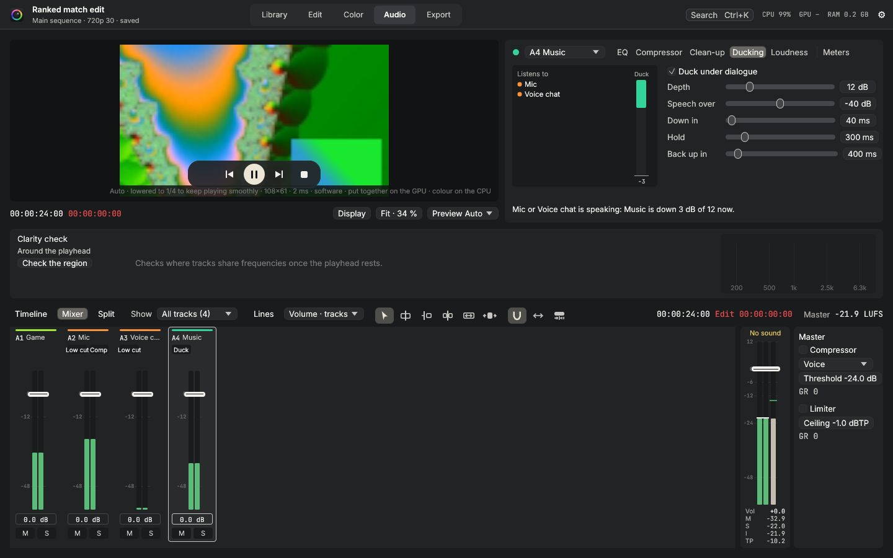
Switch the bottom of the page to Mixer or Split. Each track has a strip:
- A meter that is also the fader: drag it, or type the exact volume in dB. Double-click for 0 dB.
- Tags for the effects that are on; click one to open that tool.
- M (mute), S (solo) and the role.
The strips scroll sideways; the Master stays on the right with its own compressor and a true-peak Limiter (its ceiling keeps peaks under the level you set, −1 dBTP for online video). The limiter is off until you turn it on.
Volume and pan lines#
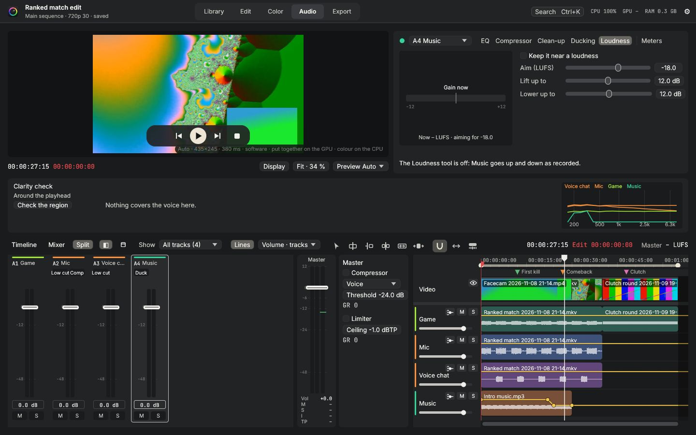
- Press A (or click Lines in the bar). “Lines on ×” shows in the tool row; Esc or a click on it leaves.
- Choose Volume or Pan, and whether to draw on tracks or on clips.
- Click on the line to add a point; drag a point to move it. Double-click or right-click a point to remove it.
A track's line stays at its place on the timeline; a clip's line stays on the same moment of its recording, so it moves with the clip. Lines work on every page with a timeline, and each change is one undo step.
Clarity check: can you hear the voice?#
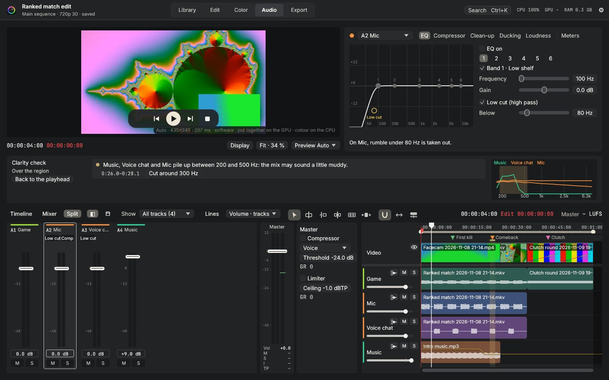
The clarity check listens to the mix the way it will be heard (effects included) and finds where something covers the voice, or where several tracks pile up into mud between 200 and 500 Hz. It never changes the sound by itself.
- When you stop playing and the playhead rests, it checks a second either side of the playhead. Click Check the region to check the whole region (Back to the playhead returns).
- Findings are listed worst first, each with a sentence, where it is (click to go there) and fix buttons. They are also marked on the timeline as coloured stretches over the tracks involved.
- The fixes are ordinary, undoable changes to one track: Lower under dialogue (ducking), Cut around 300 Hz (less mud) and Make room for the voice (a dip at 2.5 kHz). After a fix it checks again and says how bad it was and is now (“How bad: 72 % → 61 %”). A fix already made says so (“Cut applied, −3.5 dB · Cut deeper”).
- “Nothing covers the voice here.” means all is well.
Only tracks with the Dialogue role count as the voice, so set roles first.
Export page#
The Export page turns the timeline into a file: pick a preset, check the summary, click Export. Exports run in the background while you keep editing.
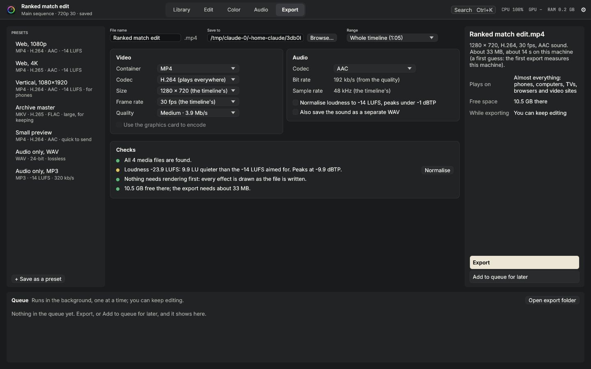
Presets#
| Preset | What you get |
|---|---|
| Web, 1080p | MP4, H.264, High quality, loudness normalised. For video sites. |
| Web, 4K | MP4 in H.265 (or H.264 where this computer can't encode H.265), High, normalised. |
| Vertical, 1080×1920 | For phones. A wide timeline gets plain black bars above and below; a vertical timeline fills it. |
| Archive master | MKV, H.265 (or H.264) with lossless FLAC sound, High, the timeline's size, as mixed. Large, for keeping. |
| Small preview | MP4, 720p, Small: quick to send for feedback. |
| Audio only, WAV | 24-bit lossless sound. |
| Audio only, MP3 | 320 kb/s, normalised. |
A preset is lit while the settings are its own. Change anything and click + Save as a preset to keep your own; right-click one of yours to remove it. Your presets are offered in every project.
“1080p” means 1080 lines on the shorter side with the timeline's shape kept, so a 21:9 timeline stays 21:9.
Settings#
- File name and folder (Browse…).
- Range: the whole timeline, or the region (in to out).
- Video: container (MP4 or MKV), codec (H.264, H.265, AV1; what this computer can't encode is greyed), size (the timeline's, 4K, 1440p, 1080p, 720p, 480p, vertical, wide, square), frame rate (the timeline's or a standard one below it), quality (High, Medium, Small, with the bit rate it means) and whether the graphics card's encoder is used.
- Audio: codec (AAC, Opus, FLAC in MKV), bit rate, sample rate, Normalise to the loudness you aim for, and Also save the sound as a separate WAV.
Normalise first measures the whole stretch as it will be mixed, then exports with the gain that brings it to your aim (Settings › Audio, −14 LUFS for online video), and puts a true-peak limiter at −1 dBTP on the mix. When it's done, it tells you the loudness and peak of what was written. Without Normalise, the mix is written exactly as you hear it.
Other shapes: exporting at another shape than the timeline's fits the whole picture inside with plain black bars, never cut off or stretched.
Audio only: choose WAV, MP3 or OGG (Opus or Vorbis) as the container; there is then no Video panel and no graphics card is needed.
Checks#
Under the settings, Kiria checks before you export and says what it found in plain words, with a one-click fix where there is one:
- Media the timeline plays that can't be found (Find them…). This one blocks the export.
- Loudness more than 2 LU from your aim, or peaks over −1 dBTP (Normalise).
- A format this computer can't encode (Use H.264).
- Black bars, or a picture made larger than the timeline (Use the timeline's size).
- A name with characters that can't be in a file name (Replace them), a file that will be replaced (Use a new name), a folder that isn't there (Make it), and too little free space (Choose another folder).
Summary and queue#
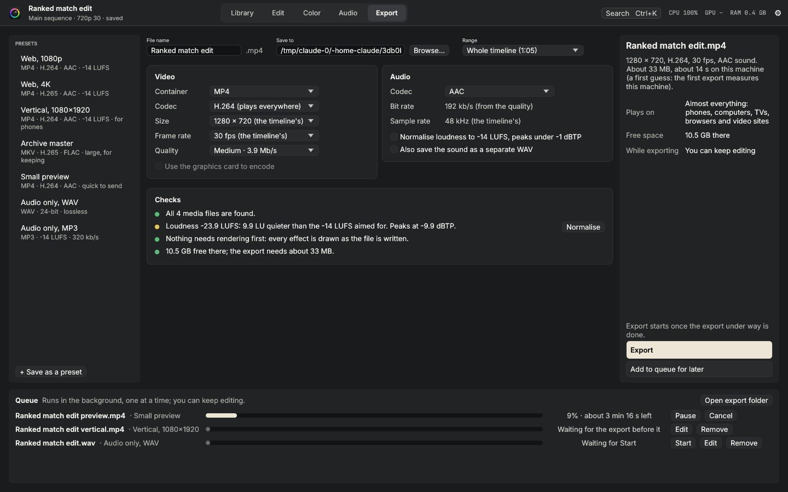
The summary on the right says what you will get in a sentence (“1920 × 1080, H.264, 60 fps, AAC sound. About 240 MB, about 1 min 40 s on this machine.”), what it plays on and the free space. The time is a first guess until you have exported once on this computer; after that it learns how fast your machine is.
- Export starts it (or puts it in line). Add to queue keeps it waiting until you click Start.
- Each export is the timeline as it was when you added it, so you can keep editing.
- In the queue: progress and time left, Pause and Resume, Cancel (nothing is left behind), Show (the file in its folder), Try again, Edit (its settings back on the page) and Remove.
- Closing the window while exports are unfinished asks first: Keep exporting or Stop and close.
Exports always use the original recordings at full quality (never proxies), and they match the viewer frame for frame and the playback sample for sample.
Settings#
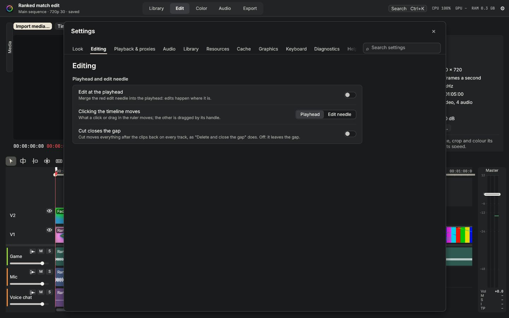
Open Settings with the cog in the top bar or Ctrl+,. The tabs run across the top; type in the search box at their right end to find a setting by any word (“proxy”, “dark”, “lufs”). Search with Ctrl+K also opens Settings right at the row you need. A Restart badge on a row means the change applies the next time Kiria starts. Settings are yours: the same in every project.
The editor's tabs#
| Tab | What you set there |
|---|---|
| Look | Theme: Ash (soft graphite with a bone accent, the usual) or Carbon (warm near-black with a copper accent). The launcher follows it. |
| Editing | Edit at the playhead; Clicking the timeline moves the playhead or the edit needle; Cut closes the gap; Clip pictures: Quick (the usual: in long recordings each picture inside a clip is the nearest key frame, up to a second or two off, and many times quicker to read) or Exact (the exact frame, slower). |
| Playback & proxies | Proxies: Off, On or Auto. Jumping in a file without a proxy: show the nearest key frame at once and then the exact frame (the usual), or wait for the exact frame. |
| Audio | Loudness to aim for: −14 LUFS (online video), −16, −23, −24, or none. Used by the meters, the Library's levels and export's Normalise. |
| Library | Keep in and out marks for this session only, or saved in the project. |
| Resources | Worker threads, Memory for frames (each Auto or a number, with what is in use now) and Background work: pause it while playing (the usual), always, or only when idle. |
| Cache | Disk space for proxies, how much is In use (this project and all), and clearing: This project's proxies (only those no other project uses, or the shared ones too) and Every proxy. Each asks first; recordings and project files are never touched. Waveforms › Clear removes the waveforms Kiria keeps so recordings are not read again each time; they are read again when needed. Clearing proxies leaves them. |
| Graphics | Draw the windows with: Automatic (Vulkan, and Direct3D 12 if Vulkan doesn't start), Vulkan or Direct3D 12 (Windows); Decode video on the window's graphics device (fastest; turn it off if video shows wrong colours, stutters or stops the app). Shared with the launcher. |
| Keyboard | Keyboard shortcuts: opens the shortcuts page. |
| Diagnostics | Diagnostics (every problem of this session and what this computer is using) and the Log folder (Copy path). |
| Help | User guide: Open shows this guide in your web browser. |
The launcher's tabs#
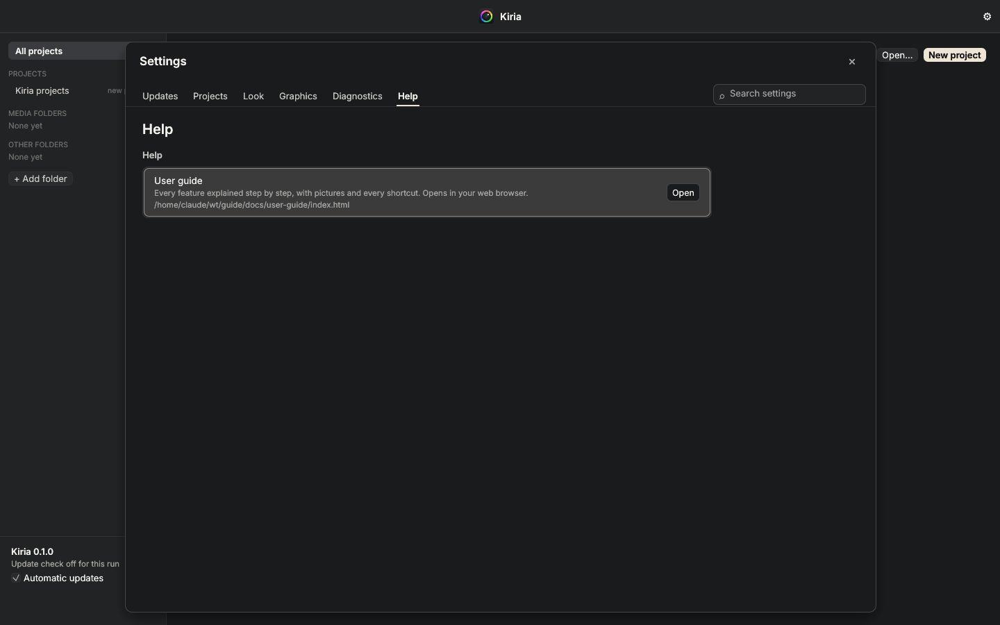
| Tab | What you set there |
|---|---|
| Updates | The Version installed and whether a newer one is out; Versions to get (Stable releases, or Betas too); Automatic updates. |
| Projects | Save new projects in (Change…). |
| Look | The theme, which follows the editor's. |
| Graphics | The same card as in the editor. |
| Diagnostics | Diagnostics and the launcher's log folder. |
| Help | The User guide. |
Keyboard shortcuts page#
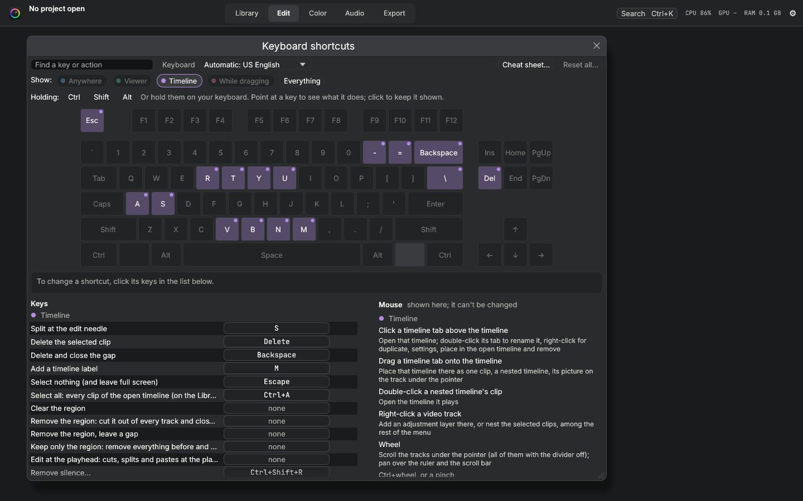
Open it with Ctrl+/, from Settings › Keyboard, or by searching for “shortcuts”, “keybinds”, “hotkeys” or “keys”.
- The keyboard is drawn in your keyboard's shape (US, UK, Norwegian and Japanese are built in) with its own characters. Used keys are tinted with a dot in their context's colour; unused keys are dimmed.
- Ctrl, Shift and Alt toggles redraw it for those combinations.
- Point at a key to see what it does; click it to pin it.
- Context chips (Anywhere, Viewer, Timeline, While dragging) filter the keyboard, the list and the mouse section. The search box narrows the list and lights up the keys it finds.
- The Mouse section lists what wheel, drag, click and held keys do, by context.
Changing a shortcut#
- Click a command's keys in the list (or pin a key and choose Change…).
- Press the new keys, or click them on the drawing.
- If another command already has those keys, the page says which one and offers Swap or Cancel. No two commands ever share a combination.
A command can be left without a shortcut, and commands that have none (such as New timeline or Sync by sound) can be given one. Reset puts one command back; Reset all puts every key back. Your changes take effect at once in menus, tooltips and search, and the launcher uses them too.
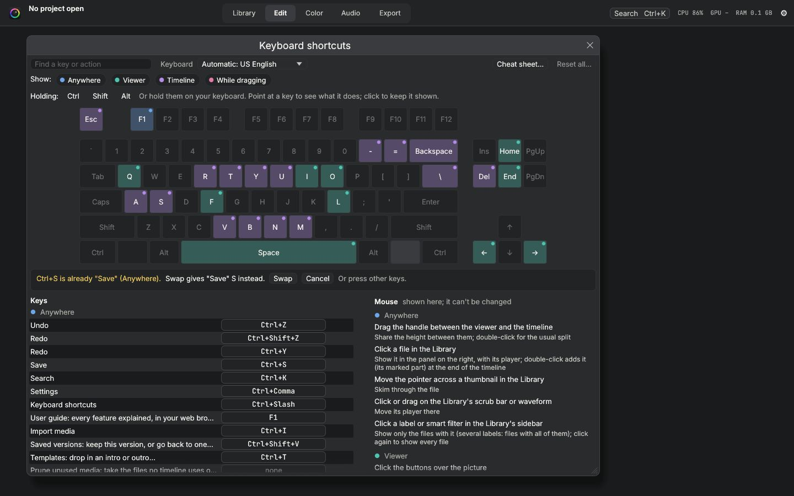
Keyboard layouts#
Shortcuts belong to a key's place on the keyboard, not to the character printed on it, so S splits from the same spot on every layout. The page follows the layout your system uses, also when you switch layouts while Kiria runs (“Automatic: Norwegian”). Pick another layout in the dropdown to override it. Menus and tooltips write keys with your keyboard's characters; the page adds the US name when they differ (“Ctrl+- (Slash on a US keyboard)”).
Printable cheat sheet#
Click Cheat sheet… and choose where to save it. You get one page to print: a keyboard picture for each combination of Ctrl, Shift and Alt in use, every command by context with your current keys, and the mouse.
Saving and recovery#
You don't need to save. Every change is written down the moment you make it, and a crash, a forced quit or a power cut never loses work.
How saving works#
- Every change, undo and redo goes into the project's journal at once (a file beside the project ending in
.journal). - When you pause, the whole project is saved by itself in the background. Ctrl+S saves it now. The top bar says “saving soon”, “saving…” or “saved”.
- Files are written whole or not at all: a save interrupted half way never leaves a broken project.
After a crash#
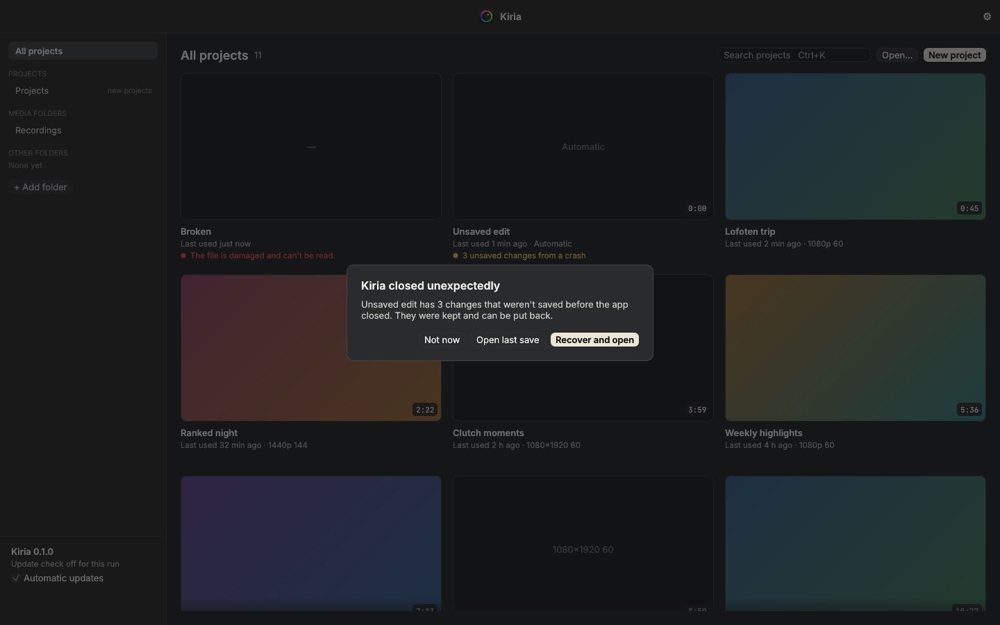
If the editor didn't close properly, the launcher says so the next time it starts:
- Recover and open: the project opens with every change back, and the editor says how many came back. Each can still be undone, one by one. The editor also offers Open last save there, in one step that undo takes back.
- Open last save: opens the project as last saved. The unsaved work is kept beside the project in a file of its own (ending in
.journal.discarded-and the date), never thrown away. - Not now: decide later; the project's card says it has unsaved work, and opening it asks again.
If nothing was unsaved, the launcher only says that nothing was lost. Several editors can be open at once, one per project; each knows only about its own crashes.
Saved versions#
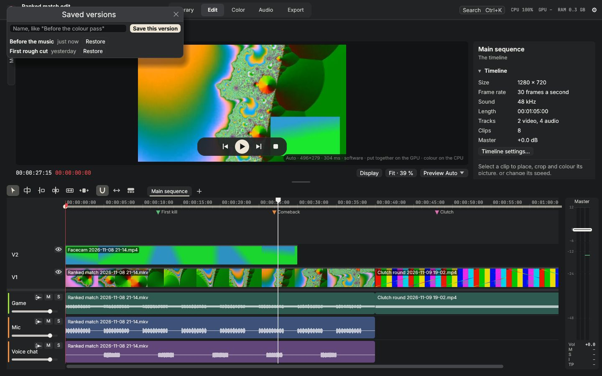
Press Ctrl+Shift+V. Type a name (“Before the music”) and click Save this version. Later, pick one and click Restore: the project goes back to it as one step, so Ctrl+Z returns to where you were. Versions are kept in a folder beside the project (ending in .versions), one file per version.
A project's files#
A project is its .kiria file plus a few files beside it with the same name: the journal (and the copy it starts from), the picture the launcher shows (.thumbnail.png), the timeline layout (.view), saved versions (.versions) and backups. Renaming, moving and deleting a project in the launcher take all of them along. Your recordings are never stored in the project; it points at them.
- Older projects: a project made by an older version is upgraded when opened, and a copy of the original is kept first (ending in
.backup-vand the old format's number). - Newer projects: a project saved by a newer version of Kiria opens read-only, with an explanation, so it is never damaged. Update Kiria to edit it.
Diagnostics and logs#
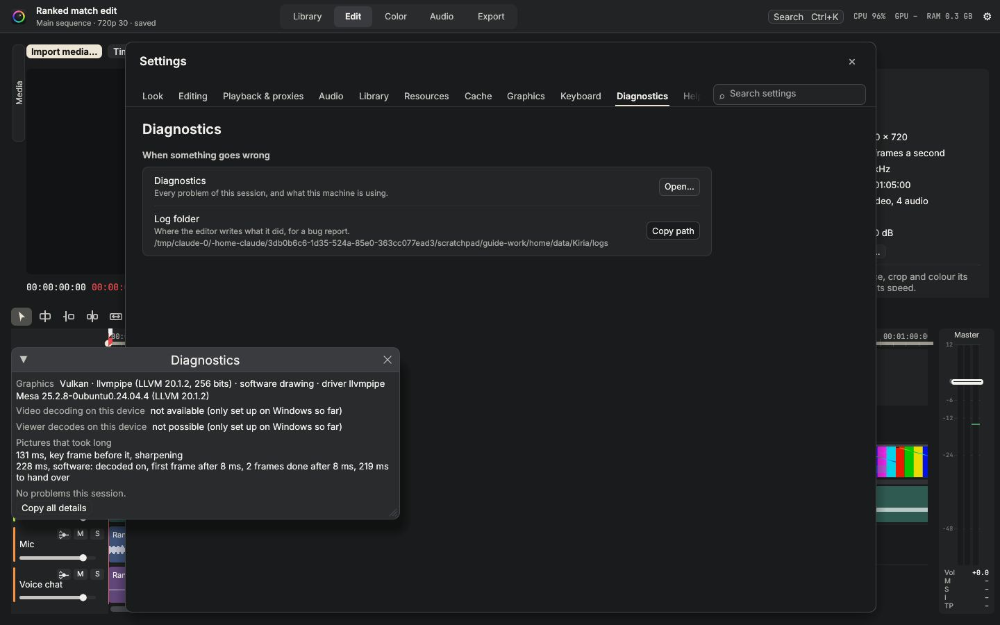
- Diagnostics (Settings › Diagnostics › Open…) lists every problem of this session with its explanation, and facts about your computer: the graphics system and card in use, which kinds of video the card decodes, and pictures that took long to show.
- Logs: both programs write what they did to a log in the app's data folder, one file a day, kept for 7 days. Settings › Diagnostics shows the folder and has Copy path.
- Crash reports: if the app ever crashes, a report (what happened, versions, graphics card, the end of the log) is written to the
crash-reportsfolder beside the logs. Attach it to a bug report.
| Windows | Linux | |
|---|---|---|
| Data folder | %LOCALAPPDATA%\Kiria | ~/.local/share/Kiria |
| Logs | …\Kiria\logs | …/Kiria/logs |
| Crash reports | …\Kiria\crash-reports | …/Kiria/crash-reports |
| Proxies | …\Kiria\cache | ~/.cache/Kiria |
Templates, the labels you offer everywhere, your export presets and your settings are small files in the data folder too.
Troubleshooting#
Every problem in Kiria comes with what happened, why, and a fix, often with a button. If that doesn't help, here are the common cases.
No sound#
- If the master column and status line say No sound output: meters still work, Kiria found no sound device. Playback still runs at the right pace and every meter works; you just don't hear it. Plug in or turn on your headphones or speakers, pick a default output in the system's sound settings, and open the project again.
- Check the track isn't muted (M), another track isn't soloed (S), and the clip's and track's volume aren't at the bottom.
- Kiria plays in stereo, like other programs. A 7.1 recording is mixed down to two channels for playback.
The window doesn't open or looks wrong#
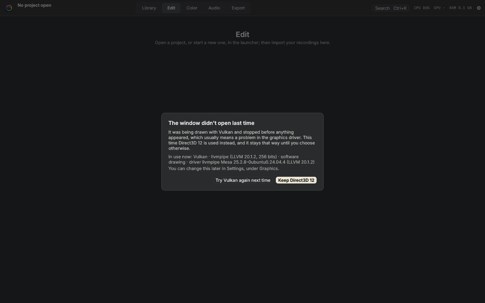
- On Windows, Kiria draws with Vulkan and falls back to Direct3D 12. If a start with Vulkan crashed or froze, the next start uses Direct3D 12 and asks The window didn't open last time: Keep Direct3D 12 or Try Vulkan again next time. You can change it later in Settings › Graphics.
- Updating your graphics card's driver fixes most drawing problems.
Video shows wrong colours, stutters or stops the app#
- If video decoding on the graphics card stopped the app, the next start asks The app stopped while showing video last time: Keep it off or Try it again next time.
- To turn it off yourself: Settings › Graphics › Decode video on the window's graphics device. Video is then decoded another way; it is slower but works everywhere.
- For heavy recordings (high resolution, high frame rate, H.265 or AV1), let proxies do the work, and set the preview quality to Auto or 1/2.
- A file Kiria can't read is refused at import with the reason. A recording whose end is missing can still be imported up to where it stops.
Files can't be found#
If you moved recordings, Kiria looks for them by itself when the project opens. For the rest, click Find them… in the banner on the Edit page and pick the folder they are in now; renamed files are found too. Adding the folder to the launcher's folders helps next time. See Missing files and relinking.
Playback is slow or the computer is busy#
- Leave Settings › Playback & proxies › Proxies on Auto, or set it to On.
- Leave Settings › Resources › Background work on “Pause to play”, so proxies and analysis wait while you play.
- Close other heavy programs, and check the top bar's processor, graphics and memory readout.
No file chooser opens (Linux)#
Kiria uses your desktop's file chooser. Without one, it explains that instead of doing nothing. Install your desktop's portal service (or zenity), or drop files on the window instead.
Reporting a problem#
Open an issue on the project's GitHub page. Say what you did and what happened, and attach the log of that day (Settings › Diagnostics › Log folder) and any crash report. Copy the Diagnostics window's details too.
Every shortcut#
These are the usual keys; the shortcuts page shows the ones you use now, and changes them. Keys are named as on a US keyboard. This table is made from the app's own shortcut table, so it is always complete.
Anywhere
| Command | Keys |
|---|---|
| Undo | Ctrl+Z |
| Redo | Ctrl+Shift+Z or Ctrl+Y |
| Save | Ctrl+S |
| Search | Ctrl+K |
| Settings | Ctrl+, |
| Keyboard shortcuts | Ctrl+/ |
| User guide: every feature explained, in your web browser | F1 |
| Import media | Ctrl+I |
| Saved versions: keep this version, or go back to one… | Ctrl+Shift+V |
| Templates: drop in an intro or outro… | Ctrl+T |
| Prune unused media: take the files no timeline uses out of the project… | none (give it one on the shortcuts page) |
| Build proxies: a proxy for every video file of the project that has none, also those cleared from the cache | none (give it one on the shortcuts page) |
| Build proxies at full speed: every video file that has none, with as much of this machine as it takes, also while playing | none (give it one on the shortcuts page) |
| Package project: copy it and the media it uses into one folder, to open on another machine… | none (give it one on the shortcuts page) |
| Save as a template: the region, or the whole timeline… | Ctrl+Shift+S |
| Copy: the selected clips, or the chosen keyframe marks | Ctrl+C |
| Cut: copy the selected clips and take them out | Ctrl+X |
| Paste: copied clips at the edit point, or copied keyframes on the selected clip | Ctrl+V |
Viewer
| Command | Keys |
|---|---|
| Play / pause | Space |
| Stop playing here | Ctrl+Space |
| Back one frame | ← |
| Forward one frame | → |
| Go to the start | Home |
| Go to the end | End |
| Back to the selected clip's previous keyframe | Alt+← |
| On to the selected clip's next keyframe | Alt+→ |
| Loop playback inside the region | L |
| Mark in: where the region begins (Edit page), or where the part of a file to add begins (Library) | I |
| Mark out: where the region ends (Edit page), or where the part of a file to add ends (Library) | O |
| Viewer full screen, and back | F |
| Move, resize, crop and turn the selected clip on the picture: handles on or off | Q |
| Split view: the selected clip's own picture beside the timeline's | none (give it one on the shortcuts page) |
| Viewer in its own window, for another screen or monitor | none (give it one on the shortcuts page) |
| Save this frame as a picture… | Ctrl+Shift+E |
| Fit the picture in the viewer | Shift+Z |
| Picture at 100 %: one pixel of the timeline on one of the screen | Ctrl+0 |
| Zoom in on the picture | Ctrl+= or Ctrl+Shift+= |
| Zoom out of the picture | Ctrl+- |
Timeline
| Command | Keys |
|---|---|
| Split at the edit needle | S |
| Delete the selected clip | Delete |
| Delete and close the gap | Backspace |
| Add a timeline label | M |
| Select nothing (and leave full screen) | Esc |
| Select all: every clip of the open timeline (on the Library page, every file shown) | Ctrl+A |
| Clear the region | none (give it one on the shortcuts page) |
| Remove the region: cut it out of every track and close the gap | none (give it one on the shortcuts page) |
| Remove the region, leave a gap | none (give it one on the shortcuts page) |
| Keep only the region: remove everything before and after it | none (give it one on the shortcuts page) |
| Edit at the playhead: cuts, splits and pastes at the playhead, no separate edit needle | none (give it one on the shortcuts page) |
| Remove silence… | Ctrl+Shift+R |
| Select tool: pick, move and trim clips | V |
| Blade tool: cut clips where clicked | B |
| Ripple tool: trims move everything after | R |
| Roll tool: move the cut between two clips | T |
| Slip tool: show another part of a clip | Y |
| Slide tool: move a clip between its neighbours | U |
| Snapping on or off | N |
| Show the whole timeline | \ |
| Zoom in on the timeline | = or Shift+= |
| Zoom out of the timeline | - |
| Taller tracks (the area under the pointer, or all) | Alt+= |
| Shorter tracks (the area under the pointer, or all) | Alt+- |
| Tracks back to their usual height | Alt+\ |
| Timeline view: rough cut or full | Ctrl+Shift+T |
| Compact tracks: every track a thin strip, to see many at a glance | none (give it one on the shortcuts page) |
| Divider between video and audio tracks, or one list that scrolls together | none (give it one on the shortcuts page) |
| Clicking the timeline moves the edit needle (the playhead by its handle), or the playhead | none (give it one on the shortcuts page) |
| Add a video track (on top) | none (give it one on the shortcuts page) |
| Add an audio track (at the bottom) | none (give it one on the shortcuts page) |
| New timeline, the same size and rate as the open one | none (give it one on the shortcuts page) |
| Duplicate the open timeline | none (give it one on the shortcuts page) |
| Nest the selected clips: move them into a timeline of their own | none (give it one on the shortcuts page) |
| Sync by sound: line up the selected clips by what they hear… | none (give it one on the shortcuts page) |
| Add an adjustment layer at the playhead: its colour changes everything below it | none (give it one on the shortcuts page) |
| Volume and pan lines: draw them on audio tracks and clips, or work clips again | A |
Mouse
Anywhere
| With the mouse | What it does |
|---|---|
| Drag the handle between the viewer and the timeline | Share the height between them; double-click for the usual split |
| Click a file in the Library | Show it in the panel on the right, with its player; double-click adds it (its marked part) at the end of the timeline |
| Move the pointer across a thumbnail in the Library | Skim through the file |
| Click or drag on the Library's scrub bar or waveform | Move its player there |
| Click a label or smart filter in the Library's sidebar | Show only the files with it (several labels: files with all of them); click again to show every file |
Viewer
| With the mouse | What it does |
|---|---|
| Click the buttons over the picture | Play or pause, step one frame back or forward, stop |
| Drag the selected clip's picture | Move it in the frame, with handles on the picture switched on (Q); it snaps to the frame's centre and edges |
| Drag a corner of the selected clip's picture | Resize it, the opposite corner staying where it is (handles on) |
| Drag the bar on a side of the selected clip's picture | Crop that side, or give some back; the whole picture shows faintly while dragging, and the side snaps to the frame's edges and centre (handles on) |
| Drag the round handle above the selected clip's picture | Turn it about its middle; it lands on upright and quarter turns when near, Shift turns in steps of 15° (handles on) |
| Double-click the selected clip's picture | Fit it: as large as fits the frame, centred (handles on) |
| Click the diamond beside a value in the inspector | Add a keyframe for it at the playhead, or remove the one there; the arrows beside it move the playhead to its previous or next keyframe |
| Right-click a filled diamond in the inspector | Choose how the value goes on to the next keyframe: linear, hold or smooth |
| Ctrl+wheel over the picture | Zoom in or out at the pointer; zooming out stops at Fit on the way |
| Drag the picture with the middle button | Move around a zoomed-in picture |
| Double-click the picture in the viewer's own window | Fill that screen with it, or give the screen back |
Timeline
| With the mouse | What it does |
|---|---|
| Click a timeline tab above the timeline | Open that timeline; double-click its tab to rename it, right-click for duplicate, settings, place in the open timeline and remove |
| Drag a timeline tab onto the timeline | Place that timeline there as one clip, a nested timeline, its picture on the track under the pointer |
| Double-click a nested timeline's clip | Open the timeline it plays |
| Right-click a video track | Add an adjustment layer there, or nest the selected clips, among the rest of the menu |
| Wheel | Scroll the tracks under the pointer (all of them with the divider off); pan over the ruler and the scroll bar |
| Ctrl+wheel, or a pinch | Zoom in or out at the pointer |
| Shift+wheel, or a sideways wheel | Pan along the timeline |
| Alt+wheel | Taller or shorter tracks in the area under the pointer (not with compact tracks) |
| Drag with the middle button | Pan along the timeline and scroll the tracks |
| Click or drag in the ruler | Move the playhead; or the edit needle, when the Display menu says clicking the timeline moves it |
| Drag the playhead's handle at the top of the ruler | Move the playhead, whatever a click moves |
| Alt+click anywhere on the timeline | Move the playhead there, whatever a click moves and with any tool; a clip clicked stays as it was |
| Alt+drag in the ruler or on empty track space | Move the playhead along with the pointer, a frame at a time |
| Shift+drag in the ruler | Mark a region |
| Drag the red handle in the ruler | Move the edit needle |
| Click a label | Go to it; double-click to change it |
| Click a clip | Select it; with Shift or Ctrl, add it to the selection |
| Click an empty place | Select nothing |
| Click a diamond along the selected clip's bottom edge | Move the playhead to that keyframe; with Shift or Ctrl, choose it with others |
| Drag a keyframe diamond | Move its keyframes (and the other chosen ones) a frame at a time, snapping to the playhead and other diamonds (Alt: no snapping) |
| Drag along the selected clip's bottom edge, beside its diamonds | Draw a box: choose the diamonds inside it (with Shift or Ctrl, add them to those chosen), to copy, move or remove together |
| Right-click a keyframe diamond | Go there, remove its keyframes, or choose how they go on: linear, hold or smooth |
| Drag a clip, or its edge | Move it, or trim it (what a drag does follows the tool) |
| Drag a clip up or down | Move it to another track of its kind; its sound finds a free track |
| Drag a clip above the top video track, or under the bottom audio track | Make a new track there for it |
| Right-click | The menu for that clip or place |
| Right-click a track's name | Add a track; rename, hide or remove that one |
| Double-click a track's name | Type a new name for it |
| Click the eye by a video track's name | Hide the track from the picture, or show it again |
| Click the level button by an audio track's name | Show or hide a line across each of its clips at the clip's volume |
| Drag a clip's level line up or down | That clip's volume: +12 dB at the top, Off at the bottom; double-click it for 0 dB |
| Drag a file from the media drawer onto a track | Lay it there: its picture on the video track under the pointer, its sound where there is room |
| Drag the edge of a track's name | That track's height; double-click for the usual height (not with compact tracks) |
| Drag the line between video and audio | Share the timeline's height between them; the video area still grows for a track that is added (the Display menu can take the line away) |
| Drag a volume fader | That track's volume, or the mix's; double-click for 0 dB |
| Click I or TP under the master meter | Start the integrated loudness and the highest true peak again |
| Right-click the master column | Choose the loudness to aim for: -14 LUFS for online video, -16, -23, -24 or none |
While dragging
| With the mouse | What it does |
|---|---|
| Hold Alt while dragging a clip, its edge or a keyframe diamond | No snapping for this drag (a click with Alt moves the playhead instead) |
| Hold Alt while dragging a picture or its corner in the viewer | No snapping for this drag |
| Hold Alt while dragging a level line | Change the volume more finely |
| Hold Ctrl while dropping a file on the timeline | Insert it, pushing later clips along, instead of overwriting |